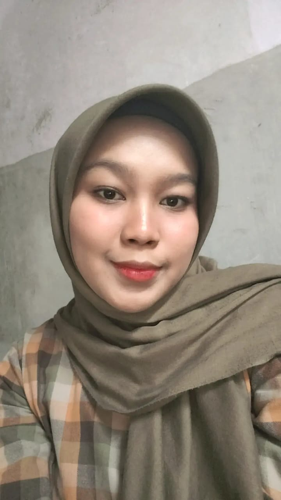

CURICULUM VITAE
|
Nama : Adinda Putri Kirana
Alamat : Kp. Sadang Wetan, Rt.01/Rw.16 Desa Ciburuy,
Kec. Padalarang
No Telepon : 0878 7593 7877
Email : kiranaadinda721@gmail.com
|

|
DESKRIPSI
Mahasiswa aktif Universitas Pasundan program studi Teknik Informatika.
Memiliki ketertarikan pada bidang teknologi informasi dan pengembangan
sistem berbasis komputer. Memiliki kemampuan analitis, berpikir logis,
serta semangat tinggi dalam mempelajari perkembangan teknologi terbaru.
PENDIDIKAN
- SMPUB Global Nusantara
- SMK Negeri 4 Padalarang
PENGALAMAN KERJA
- Web Developer Intern (Praktek Kerja Lapangan) Juli – Desember 2024 Subkelompok Substansi Hukum, Kerjasama dan Informasi TekMIRA – Balai Besar Pengujian Mineral dan Batubara, Kementerian ESDM
- Membangun website internal sederhana untuk pengelolaan data kontrak kerja sama
- Merancang fitur input, edit, dan pencarian data kontrak menggunakan PHP dan MySQL
- Mengelola database melalui phpMyAdmin, menjalankan sistem lokal (XAMPP)
- Berkoordinasi dengan pegawai untuk analisis kebutuhan sistem
- Proyek dijadikan Tugas Akhir dan dipresentasikan dalam sidang kelulusan
BAHASA PEMROGRAMAN
KEAHLIAN
- Web Dev: PHP, HTML, CSS, JavaScript (dasar)
- Database: MySQL, phpMyAdmin
- Framework: Laravel (tingkat dasar)
- Tools: XAMPP, Visual Studio Code
- UI/UX: Desain antarmuka sederhana
- Soft Skills: Tanggung jawab, cepat beradaptasi, kerja tim & mandiri, terbuka terhadap masukan
|